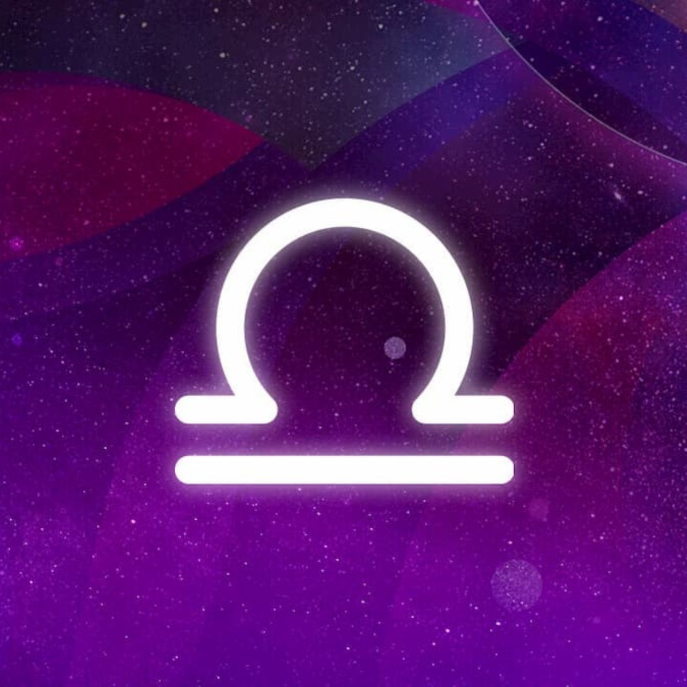

SIGNOS ZODIACALES
ARIES
Signo de fuego y el primero de la rueda zodiacal. ¡Inician el año astral! Los Aries llevan la palabra iniciativa escrita en la frente. Ya sea en temas profesionales, como en relaciones sentimentales, familiares o amistosas. No obstante, este liderazgo, seguridad y personalidad tan directa de los Aries puede hacer que la gente se llegue a asustar. O que incluso les cueste seguirles el ritmo. Una manera rápida y práctica de saber que estás junto a uno de ellos: no pueden estar más de cinco minutos metidos en la cama una vez se despiertan. ¡Necesitan aprovechar el tiempo al máximo!
TAURO
Los Tauro, signo de tierra, tienen un don natural para conquistar, gracias a su sensualidad innata. Pero aquí no terminan las virtudes de un Tauro: son los signos perfectos para hacer que mantengamos los pies en el suelo, ya que son bastante pragmáticos y con las ideas bien claras. Son los que más estabilidad pueden aportar, porque rara vez cambiarán de opinión. Aunque quizá deberían dejar de pensar tanto en las objetos materiales y centrarse en los pequeños placeres y detalles de la vida.
GÉMINIS
Muy sociables y demasiado curiosos, aspecto negativo cuando se trata de establecer una relación ya que les cuesta mucho comprometerse. En un signo de aire y en su cabeza conviven dos gemelos —literalmente hablando si te basas en su símbolo— que les ha ce cambiar de opinión constantemente. Además, pecar un poco de falsos y fantasmas. Los mejores políticos, oradores y comerciales, eso sí. Los Géminis serán las almas de la conversación, aunque evitarán a toda costa hablar de sus verdaderos sentimientos, para proteger su corazoncito.
CÁNCER
Se llevan el premio a los más sensibles del horóscopo. La palabra drama les pertenece y son capaces de generarlo en su cabeza con un motivo los más mínimo sensible. Esto ocurre porque son muy sensibles y tienden a ser inseguros con ellos mismos. Confían demasiado en los demás, eso sí. Quizá por eso son los mejores en empatizar y escuchar los problemas ajenos. En el extremo contrario, cuando se sienten amenazados o vulnerables, los Cáncer, de naturaleza agua, se esconden bajo su caparazón y sacan lo peor de ellos: un carácter terrible y muy desagradable.
LEO
Estar bajo el signo de fuego del león significa tener luz propia, una extrema lealtad hacia los demás y una maravillosa facilidad para hacer sentir bien a las personas de su alrededor. Parece todo maravilloso, ¿verdad? Pero no es oro todo lo que reluce porque, al estar regidos por el Sol, los Leo son muy egocéntricos. Muchísimo. Aspecto que les hace ser muy egoístas y poco empáticos en muchísimas ocasiones. De la misma manera, ojito con llevarles la contraria. Tienen un humor de perros cuando las cosas no salen como quieren.
VIRGO
El fin vital de cualquier Virgo, signo de tierra, es encontrar la perfección y la pureza en absolutamente todo lo que tiene alrededor. Para ello, son muy ordenados, rozando incluso el convertirse en maniáticos. Su parte positiva reside en la servicialidad y generosidad que siempre demuestran a los demás. Aunque deben aceptarse tal y como son, y trabajar en dejar de analizar todo lo que ocurre constantemente —para criticarlo después—. Los reyes del ‘overthinking’, sí son.
LIBRA
No hay nada que le guste menos a un Libra que el desequilibrio, ya sea emocional o en las relaciones. La razón reside en que dudan de todo, constantemente, como buen signo de aire que es. No de sí mismo, sino más bien de las decisiones que toman. ¿Le quiero o no le quiero? ¡Así todo el rato! Por eso, muchas veces evitan cualquier tipo de compromiso aunque, una vez que se tiran a la piscina, lo dan todo. Y es que, son el signo más romántico del zodiaco. ‘‘Al about love’’. Lo que les lleva a creerse los protas de sus propios drama en cualquier situación.

ESCORPIO
Escorpio tiene una parte muy buena y otra muy mala. Por un lado, son sensibles, muy comprensivos, luchan constantemente por lo que piensan que es justo... Pero hasta llegar ahí, nos encontramos con un ardiente caparazón, que utilizan a modo de escudo. Quizá más veces de las que deberían, ya que los Escorpio tienen muchísimo carácter, pero en el fondo son unos bollitos de canela que tienen pánico a que les hagan daño —‘AKA’ un signo de agua—.
SAGITARIO
Todos los actos de un Sagitario, signo de fuego, tienen como finalidad convertir las experiencias en aprendizaje. No obstante, esta inquietud y exceso confianza en los demás pueden jugarles malísimas pasadas. Como, por ejemplo, llegar a obsesionarse demasiado con algo. No hablamos de cabezonería, sino de repetir una idea en la cabeza en repetidas ocasiones y tener todo bajo control. Esto ocurre en todos los ámbitos de sus vidas: desde el amor, pasando por el trabajo, hasta en un viaje que realicen o una cena que preparen.
CAPRICORNIO
Los Capricornio son tan ambiciosos y tienen tanta disciplina, que es muy fácil que acaben perdiendo la perspectiva. ¡Por mucho elemento de tierra que sean! Son muy cabezones, queriendo llevar siempre la razón y no aceptando más opiniones. Esto, si no lo controlan, pueden volverse en su contra, convirtiéndoles en personas algo controladoras e intensas. Como parte positiva (que también tienen mucho), siempre saben lo que quieren y anteponen su familia y bienestar a todo lo demás. Además, su paciencia es ilimitada.
ACUARIO
Lo más destacable de su personalidad es que nunca, nunca, nunca se dan por vencidos a la hora de luchar por su libertad. Son almas libres (ejem, signo de aire) y los responsables de iniciar los grandes cambios en el mundo. ¡Estamos en plena época acuariana de cambio! Ahora bien, esta manera de fluir y querer ser rebelde les lleva a descuidar en muchísimas ocasiones a quienes de verdad les quieren y apoyan. En otras palabras: son los típicos de los que puedes estar sin saber nada durante meses. Y ten claro que te dejarán con los dos ticks azules en cualquier momento.
PISCIS
Los Piscis son conocidos por dos características muy marcadas: su gusto por el drama y la imaginación. En la primera son unos cracks, de verdad. No llegan al nivel de los Cáncer, pero sí son capaces de montarse su propia peli y vivir en ella tan a gusto, aún sabiendo que está muy alejada de la realidad. No obstante, esto está muy relacionada con que siempre están en las nubes, pensando en sus cosas y soñando. Llevan dentro una gran espiritualidad. También son empatía y compasivos, aunque puede ponérseles en contra, ya que muchas veces tardan en ver la toxicidad existente de algunas relaciones.